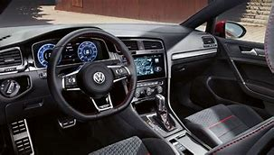
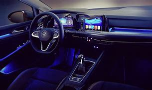
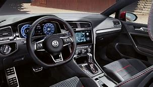
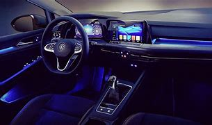
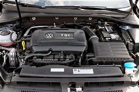
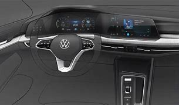

2020 VOLKSWAGEN GTI GOLF
The 2020 Volkswagen Golf GTI is the last iteration of the seventh-generation GTI, as it’s slated to be replaced by an all-new eighth-generation model in the 2021 model year.
Price R421 421,07
 



Overview
The Volkswagen Golf GTI continues to be a favorite of ours and a perennial 10Best award-winner—nabbing another spot on our 2020 list. Combining speed, handling, build quality, an attractive interior, and room for the family, a well-equipped GTI hatchback costs less than $30,000. You can't find a better car for less and you have to spend a lot more money to get a better one. For 2020, the sportiest version of the practical and refined Golf is the GTI—VW has discontinued the racier R model until the next-gen Golf arrives in a year or so
What's new?
From frontal-collision warning to blind-spot monitoring, previously optional driver-assistance technologies are now standard. The biggest change for 2020 is that what was previously the industry's best bumper-to-bumper warranty at six years and 72,000 miles of coverage has been shortened to four years or 50,000 miles. To help make that reduced coverage a little easier to handle, all 2020 Volkswagens offer two years of regularly scheduled maintenance included at no charge. A new Golf likely will debut in the next year, which leaves the current seventh-generation GTI at the end of its current lifecycle. The eighth-generation GTI is set to debut at the Geneva auto show in March.
Engine, Transmission And Peromance
The GTI's turbocharged 228-hp four-cylinder is one of the greats. It doesn't offer overwhelming power but delivers instant response and solid acceleration. The clutch pedal in models with the manual transmission is easy to use, which means that shifting is never a chore. The optional dual-clutch automatic is one of our favorite non-manual transmissions. We'd happily pilot a GTI every day. It is nimble and responsive and takes corners beautifully. Most important, the GTI is well coordinated and predictable, responding just as you'd want to your steering and throttle inputs. The GTI reacts to steering inputs so quickly and accurately that you'll think the car is a sentient being. Its brakes are firm and progressive on the road and strong on the track.
Fuel Economy and Real-World MPG
Fuel economy in the sport-compact class ranges from acceptable to outstanding, with the GTI claiming a solid spot in this segment based on EPA ratings. It outperformed expectations in our real-world testing, sweetening the deal even further. The last version we tested earned 36 mpg during our highway test, outperforming its EPA rating by 2 mpg.
Interior, Cargo and Comfort
Volkswagen interiors are simple and well-crafted as a rule, and the GTI's is no exception. Although its main focus is driving, shoppers can still outfit their hot hatch with a few luxury features. Notable options include dual-zone automatic climate control and 12-way adjustable leather power seats, but the GTI is plenty comfortable in base guise. Four people can travel in reasonable comfort in any of them, but don't expect vast amounts of spread-out room in the rear seats. The entire Golf family enjoys large cargo holds, easy-to-fold seats, and useful in-cabin storage cubbies. Thanks to the nearly flat load floor, there's plenty of space for trips to the beach or modest runs to Ikea.
 Infotainment and Connectivity
Every model in the GTI lineup is graced with a touchscreen that is simple to use but in our testing, it responded slowly to user inputs. The system uses a mix of touch and voice commands as well as several menu-based buttons and is about as easy to operate as the average smartphone. Apple CarPlay and Android Auto are standard, too, and make for simple device integration.
Safety and Driver-Assist Features
The GTI earned perfect scores in its crash tests. A full complement of driver-assistance equipment is available. None of it is standard, however, which is the one thing holding the GTI back from perfection here. Key safety features include:
- Available forward-collision warning and automated emergency braking
- Available lane-departure warning and lane-keeping assist
- Available adaptive cruise control
Warranty and Maintance coverage
What was previously the industry's best bumper-to-bumper warranty at six years and 72,000 miles of coverage has been shortened to four years or 50,000 miles. To help make that reduced coverage a little easier to handle, all 2020 Volkswagens offer two years of regularly scheduled maintenance included at no charge.
- Limited warranty covers 4 years or 50,000 miles
- Powertrain warranty covers 4 years or 50,000 miles
- Complimentary scheduled maintenance is covered for 2 years or 20,000 miles